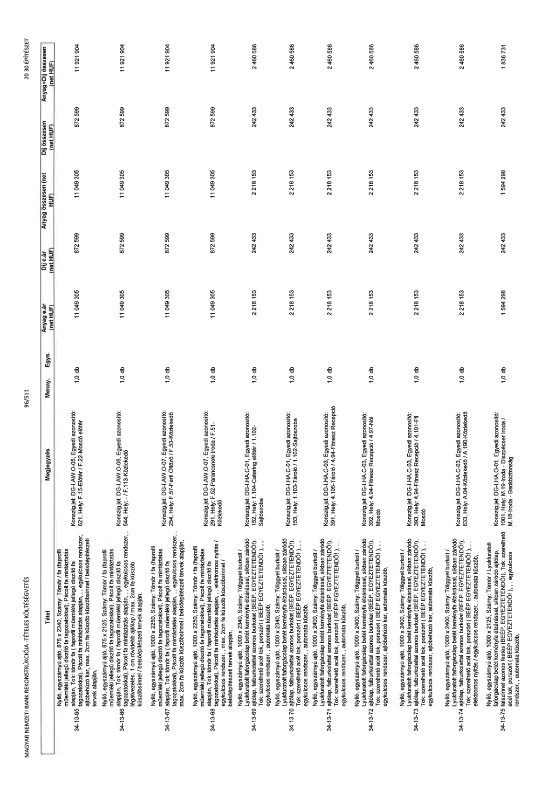

| Tétel | Megjegyzés | Menny. | Egys. | Anyag e.ár (net HUF) | Díj e.ár (net HUF) | Anyag összesen (net HUF) | Díj összesen (net HUF) | Anyag+Díj összesen (net HUF) |
|---|---|---|---|---|---|---|---|---|
| 34-13-65 | Nyíló, egyszárnyú ajtó, 875 x 2340, Szárny: Tömör / fa (faprofil műemléki jellegű díszítő fa tagozatokkal), Pácolt fa mintáztatás alapján, Tok: tömör fa (faprofil műemléki jellegű díszítő fa tagozatokkal), Pácolt fa mintáztatás alapján,, egykulcsos rendszer,, ajtóbehúzó kar, max. 2cm fa küszöb küszöbsínnel / belsőépítészeti tervek alapján,; Konszig.jel: DG-I.AW.O-05, Egyedi azonosító: 621, Hely: F.15-Előtér / F.22-Mosdó előtér | 1,0 | db | 11 049 305 | 872 599 | 11 049 305 | 872 599 | 11 921 904 |
| 34-13-66 | Nyíló, egyszárnyú ajtó, 875 x 2125, Szárny: Tömör / fa (faprofil műemléki jellegű díszítő fa tagozatokkal), Pácolt fa mintáztatás alapján, Tok: tömör fa (faprofil műemléki jellegű díszítő fa tagozatokkal), Pácolt fa mintáztatás alapján,, egykulcsos rendszer,, légátvezetés, 1 cm rövidebb ajtólap / max. 2cm fa küszöb küszöbsínnel / belsőépítészeti tervek alapján,; Konszig.jel: DG-I.AW.O-06, Egyedi azonosító: 544, Hely: - / F.113-Közlekedő | 1,0 | db | 11 049 305 | 872 599 | 11 049 305 | 872 599 | 11 921 904 |
| 34-13-67 | Nyíló, egyszárnyú ajtó, 1000 x 2250, Szárny: Tömör / fa (faprofil műemléki jellegű díszítő fa tagozatokkal), Pácolt fa mintáztatás alapján, Tok: tömör fa (faprofil műemléki jellegű díszítő fa tagozatokkal), Pácolt fa mintáztatás alapján,, egykulcsos rendszer,, max. 2cm fa küszöb küszöbsínnel / belsőépítészeti tervek alapján,; Konszig.jel: DG-I.AW.O-07, Egyedi azonosító: 254, Hely: F.57-Férfi Öltöző / F.53-Közlekedő | 1,0 | db | 11 049 305 | 872 599 | 11 049 305 | 872 599 | 11 921 904 |
| 34-13-68 | Nyíló, egyszárnyú ajtó, 1000 x 2250, Szárny: Tömör / fa (faprofil műemléki jellegű díszítő fa tagozatokkal), Pácolt fa mintáztatás alapján,, elektromos nyitás / egykulcsos rendszer, max. 2cm fa küszöb küszöbsínnel / belsőépítészeti tervek alapján,; Konszig.jel: DG-I.AW.O-07, Egyedi azonosító: 291, Hely: F.52-Parancsnoki iroda / F.51-Közlekedő | 1,0 | db | 11 049 305 | 872 599 | 11 049 305 | 872 599 | 11 921 904 |
| 34-13-69 | Nyíló, egyszárnyú ajtó, 1000 x 2340, Szárny: Tölgyfával burkolt / Lyukfuratolt forgácslap betét keményfa élzárással, síkban záródó ajtólap, falburkolattal azonos festés (BEEP. EGYEZTETENDŐ!), Tok: szerelhető acél tok, porszórt ( BEEP EGYEZTETENDŐ!), ,, egykulcsos rendszer,, automata küszöb,; Konszig.jel: DG-I.HA.C-01, Egyedi azonosító: 152, Hely: 1.104-Catering előtér / 1.102-Sajtószoba | 1,0 | db | 2 218 153 | 242 433 | 2 218 153 | 242 433 | 2 460 586 |
| 34-13-70 | Nyíló, egyszárnyú ajtó, 1000 x 2340, Szárny: Tölgyfával burkolt / Lyukfuratolt forgácslap betét keményfa élzárással, síkban záródó ajtólap, falburkolattal azonos festés (BEEP. EGYEZTETENDŐ!), Tok: szerelhető acél tok, porszórt ( BEEP EGYEZTETENDŐ!), ,, egykulcsos rendszer,, automata küszöb,; Konszig.jel: DG-I.HA.C-01, Egyedi azonosító: 153, Hely: 1.103-Tároló / 1.102-Sajtószoba | 1,0 | db | 2 218 153 | 242 433 | 2 218 153 | 242 433 | 2 460 586 |
| 34-13-71 | Nyíló, egyszárnyú ajtó, 1000 x 2400, Szárny: Tölgyfával burkolt / Lyukfuratolt forgácslap betét keményfa élzárással, síkban záródó ajtólap, falburkolattal azonos festés (BEEP. EGYEZTETENDŐ!), Tok: szerelhető acél tok, porszórt ( BEEP EGYEZTETENDŐ!), ,, egykulcsos rendszer,, automata küszöb,; Konszig.jel: DG-I.HA.C-03, Egyedi azonosító: 391, Hely: 4.106-Tároló / 4.94-Fitnesz Recepció | 1,0 | db | 2 218 153 | 242 433 | 2 218 153 | 242 433 | 2 460 586 |
| 34-13-72 | Nyíló, egyszárnyú ajtó, 1000 x 2400, Szárny: Tölgyfával burkolt / Lyukfuratolt forgácslap betét keményfa élzárással, síkban záródó ajtólap, falburkolattal azonos festés (BEEP. EGYEZTETENDŐ!), Tok: szerelhető acél tok, porszórt ( BEEP EGYEZTETENDŐ!), ,, egykulcsos rendszer,, automata küszöb,; Konszig.jel: DG-I.HA.C-03, Egyedi azonosító: 392, Hely: 4.94-Fitnesz Recepció / 4.97-Női Mosdó | 1,0 | db | 2 218 153 | 242 433 | 2 218 153 | 242 433 | 2 460 586 |
| 34-13-73 | Nyíló, egyszárnyú ajtó, 1000 x 2400, Szárny: Tölgyfával burkolt / Lyukfuratolt forgácslap betét keményfa élzárással, síkban záródó ajtólap, falburkolattal azonos festés (BEEP. EGYEZTETENDŐ!), Tok: szerelhető acél tok, porszórt ( BEEP EGYEZTETENDŐ!), ,, egykulcsos rendszer, ajtóbehúzó kar, automata küszöb,; Konszig.jel: DG-I.HA.C-03, Egyedi azonosító: 393, Hely: 4.94-Fitnesz Recepció / 4.101-Fiú Mosdó | 1,0 | db | 2 218 153 | 242 433 | 2 218 153 | 242 433 | 2 460 586 |
| 34-13-74 | Nyíló, egyszárnyú ajtó, 1000 x 2400, Szárny: Tölgyfával burkolt / Lyukfuratolt forgácslap betét keményfa élzárással, síkban záródó ajtólap, falburkolattal azonos festés (BEEP. EGYEZTETENDŐ!), Tok: szerelhető acél tok, porszórt ( BEEP EGYEZTETENDŐ!), ,, elektromos nyitás / egykulcsos rendszer,, automata küszöb,; Konszig.jel: DG-I.HA.C-03, Egyedi azonosító: 633, Hely: 4.04-Közlekedő / A.190-Közlekedő | 1,0 | db | 2 218 153 | 242 433 | 2 218 153 | 242 433 | 2 460 586 |
| 34-13-75 | Nyíló, egyszárnyú ajtó, 1000 x 2125, Szárny: Tömör / Lyukfuratolt forgácslap betét keményfa élzárással, síkban záródó ajtólap, falburkolattal azonos festés (BEEP. EGYEZTETENDŐ!), Tok: szerelhető acél tok, porszórt ( BEEP EGYEZTETENDŐ!), ,, egykulcsos rendszer,, automata küszöb,; Konszig.jel: DG-I.HA.O-01, Egyedi azonosító: 1001, Hely: M.19-Iroda - Diszpécser iroda / M.18-Iroda - Bankbiztonság | 1,0 | db | 1 594 298 | 242 433 | 1 594 298 | 242 433 | 1 836 731 |
